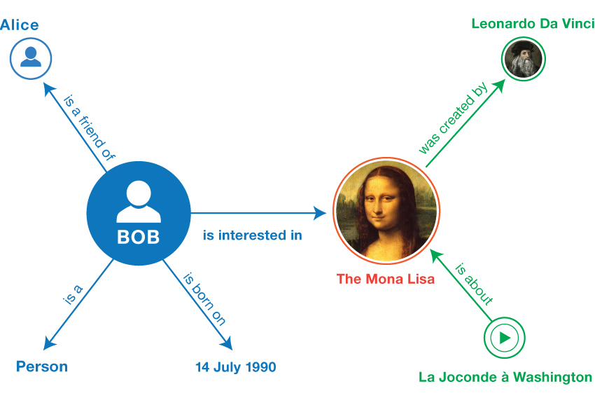

Lab 8 - Geospatial Semantics I#
Th. 21.11.2024 15:00-17:00
1 GeoNames as a Data Provider#
In this section, we will first go through GeoNames as a global gazetteer and try to understand its contained data.
1.1 Description#
The GeoNames geographical database is available for download free of charge under a creative commons attribution license. It contains over 25 million geographical names and consists of over 12 million unique features whereof 4.8 million populated places and 16 million alternate names.
GeoNames is integrating geographical data such as names of places in various languages, elevation, population and others from various sources. All lat/long coordinates are in WGS84 (World Geodetic System 1984). Users may manually edit, correct and add new names using a user friendly wiki interface.
1.2 Feature codes#
In GeoNames, all features are categorized into several feature classes and further subcategorized into one out of 645 feature codes.
Question 1: How many feature classes does it have? What are they?
1.3 Statistics#
Check out (more statistics …) here regarding region/country statistics and how many features each region/country has.
Question 2: Where is Austria? Can you list the associated statistics?
1.4 Data Dump#
The data in GeoNames is accessible free of charge through a number of webservices and a daily database export. See the readme.txt about downloadable data stored on the server.
Download the AT.zip dataset, which includes features within Austria.
2 GeoNames Ontology#
GeoNames was developed during the Semantic Web movement.
2.1 The Semantic Web#
The Semantic Web is a project that intends to add computer-processable meaning (semantics) to the World Wide Web. In Feb 2004, The World Wide Web Consortium (W3C) released the Resource Description Framework (RDF) and the OWL Web Ontology Language (OWL) as W3C Recommendations. RDF is used to represent information and to exchange knowledge in the Web. OWL is used to publish and share sets of terms called ontologies, supporting advanced Web search, software agents and knowledge management.
2.2 Ontology Expressed in OWL#
The GeoNames Ontology makes it possible to add geospatial semantic information to the World Wide Web. All over 11 million geonames toponyms now have a unique URL with a corresponding RDF web service. Other services describe the relation between toponyms. The Ontology for GeoNames is available in OWL.
You can download from here. To open it, you can try to use code editors like Microsoft Visual Studio Code.
Question 3: What interesting information do you see from the GeoNames ontology? List a few examples.
2.3 Mapping GeoNames Ontology with Other Ontologies#
Check also how the GeoNames Ontology can be mapped to other ontologies, e.g., of other gazetteers. You can download the mapping from here, and again, open it with the code editor.
P.S.: One of such gazetteers is DBpedia.
3 Working with GeoNames Data - Austria#
In this section, we are going to use the data downloaded before and learn how to read and browse it.
3.1 Read Downloaded Data#
This time we need to read a .txt file with Pandas to create a DataFrame. However, the file does not come with a header. How do we know what each column stands for?
Quick answer(!): Check the readme.txt in the downloaded .zip file, so that you can know how to define the field names in AT.txt.
import pandas as pd
df_at = pd.read_csv('AT/AT.txt', sep='\t', names=["geonameid", "name", "asciiname", "alternatenames",
"latitude","longitude","feature class","feature code",
"country code","cc2","admin1 code","admin2 code",
"admin3 code","admin4 code","population",
"elevation","dem","timezone","modification date"])
df_at.head()
Find out what is the geonameid for Wien.
df_at[df_at['name'] == 'Wien']
3.2 Browse a GeoNames Feature with FollowYourNose Search#
Next, we are going to use the retrieved geonameid to browse information about Wien.
Note that GeoNames is using 303 redirection to distinguish the Concept (thing as is) from the Document about it.
For Wien we actually have these two URIs pointing to both it as a Concept and a Document about it:
The GeoNames redirects requests for [1] to [2]. The latter one that contains RDF descriptions about a feature is what we will use next for FollowYourNose search.
3.2.1 RDFLib#
To access and parse RDF, we need a Python package called RDFLib to work with. Install the libary with the following command.
pip install rdflib
The data are in the form of triples, and we need a Graph to load and store them. A triple has the form of <subject, predicate, object>. 
from rdflib import Graph
# Create a Wien Graph
g = Graph()
Parse the Document about Wien.
g.parse("http://www.geonames.org/2761367/about.rdf")
Loop through each triple in the Wien Graph, and check if there is at least one triple.
for subj, pred, obj in g:
if (subj, pred, obj) not in g:
raise Exception("It better be!")
Question 4: How many triples are there in the Wien Graph?
print(f"The Wien Graph has {len(g)} triples.")
Print out the entire Wien Graph in the RDF Turtle format.
print(g.serialize(format="turtle"))
3.2.2 Keep Searching?#
Can we keep searching for linked entities to Wien? Try the following code.
from rdflib import URIRef
wien = URIRef("https://sws.geonames.org/2761367/")
predicate_chosen = URIRef("http://www.geonames.org/ontology#childrenFeatures")
for s, p, o in g.triples((wien, predicate_chosen, None)):
print(s, p, o)
g.parse(o)
print(g.serialize(format="turtle"))
Question 5: What is this url - https://sws.geonames.org/2761333/ - pointing? What is its difference compared with Wien?
Submission#
Run the codes above and submit the .ipynb file along with answers to Question 1 to 5.